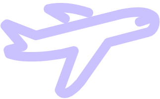

人生中第一个小小网页---2020.10.28

！！！对于不同的浏览器或电脑端，打开的排版可能会出现移位，幸运的是：对此我暂时也不知道如何解决~不过我的确在排版上改了很久，有些地方都是
几个像素几个像素地移动滴，所以浏览器解析错了不怪我噢~~~~~
以下为HTML源代码：（CSS采用内嵌样式）
<!--这个sublime的高亮看起来真舒服哈哈，我好喜欢-->
<!DOCTYPE html> <!--文档类型：符合HTML5标准-->
<html lang="en"> <!--lang属性：搜索引擎，en为英文，zh为中文-->
<head>
<meta charset="UTF-8"> <!--meta为：元数据-->
<!--charset属性：字符集编码方式--><!--浏览器：UTF-8是国际编码-->
<title>
这是我的一个名片
</title>
<!--link type="text/css" rel="stylesheet" herf="../styles/card.css"/-->
<style type="text/css">
*{ padding: 0;
margin: 0;
}
body{ background-image:radial-gradient(#ffb2c8,#ffe7f2);
text-align:center;
}
/*颜色值是我专门在procreate里的色盘上一点一点地移动然后取的色！真是令人头秃...*/
.Z { position: absolute;
color:#b3b3b3;
font-family:"STSong";
font-size: 1.5rem;
left:-750px;
top:800px;
}
.one{ width:216px;
height:364.2px;
position:relative;
bottom:640px;
right:350px;
border: 3px solid #ffb2c8;
padding: 2px 2px;
}/*这里我其实为了图片边框的颜色和宽度改了好久，最终，
我觉得3px可能比2px看起来效果会好一点，太不容易了!!!!!*/
.two{ width:200px;
height:200px;
position:absolute;
top:125px;
right:180px;
}
.three{
position:relative;
top: 455px;
color: purple;
}
.four{
position: absolute;
top:525px;
right:220px;
}
.five{
position: absolute;
top:1200px;
left:500px;
height:314px;
width:500px;
}
.six{
position: absolute;
top:170px;
right: 750px;
height: 130px;
width: 130px;
}
.seven{
position: absolute;
top:530px;
left: 200px;
height:120px;
width:60px;
}
.eight{
position: absolute;
top:260px;
left:700px;
height:50px;
width:50px;
}
.nine{
position: absolute;
top:1480px;
right:575px;
font-size:1.4rem;
color: #ccc;
}
/*要问这个one.two.three选择器和A.B以及再后面的a.b有什么区别，我也记不得了....因为先开始本来想不同类型的我用不同的选择器来写以方便阅读，但后来实在是太多了，脑袋也有点不太灵活了，就没管那么多了......*/
.A { background-image:linear-gradient(to top,#ffcff7,#dbe7ff);
border-style:none;
height:500px;
margin:200px;
margin-top:150px;
}
/*我就说最开始用<!---->注释为什么语句还是白色高亮，结果后来才发现CSS注释和我们C语言的一样~*/
/*因为有多个div标签，所以使用类选择器。然而到后面我才发现，其实应该给每个选择器加个注释，要不然每次找起来确实有一点麻烦，但是我懒得加了哈哈哈*/
.B { font-size: 2.2rem;
font-family:"STSong";
color: purple;
position:absolute;
right:250px;
bottom:250px;
}
/*设置图片位置时我好像有点不大聪明的样子，就那个px的值反复调才终于弄到合适的位置，我感觉好麻烦，我猜是方法不大简便*/
ol { list-style-type: none;
list-style-position: inside;
text-align:left;
}
h1 {
font-size: 4rem;
position: absolute;
font-family: "SimHei";
right: 600px;
top: 210px;
color: purple;
}
p {
font-size: 2rem;
position: absolute;
right: 450px;
top: 235px;
color: purple;
}
.a {
background:url(../images/phone.png) no-repeat 0rem 0.4rem;
/*图片的位置，虽然我也不知道为什么0.2是最合适的*/
background-size: 2rem 2rem;
/*图片的大小，1rem表示相对宽度为100%*/
text-indent: 2rem;
/*设置文本块的缩进*/
}
.b {
background:url(../images/QQ.png) no-repeat 0rem 0.4rem;
background-size: 2rem 2rem;
text-indent: 2rem;
}
.c {
background:url(../images/email.png) no-repeat 0rem 0.4rem;
background-size: 2rem 2rem;
text-indent: 2rem;
}
.d {
background:url(../images/address.png) no-repeat 0rem 0.4rem;
background-size: 2rem 2rem;
text-indent: 2rem;
}
a:link{
text-decoration:none;
}
a:hover{
font-size: 140%;
}
/*虽然我没有博客，但我也有超链接哈哈哈哈哈哈哈哈哈，试图蒙混过关*/
.line{
border: none;
height:170px;
width: 3px;
background:#daa1ff;
position: absolute;
right: 820px;
top:330px;
}
/*中间那条竖线，那三个参数真调了好久呀*/
/*调那个竖线颜色时，一直想用那个浅紫色，但脑袋已经有点不大灵活了，在一百多行码里找了半天都没找到之前用过的那个浅紫色的号码....*/
</style>
</head>
<body>
<div class="A" align="center">
<h1>谌&nbsp强</h1>
<h2></h2>
<p>QIANGQ</p>
<!--这里h2是空的，原本是QIANGQ。因为不知道怎么回事，h2只要一调整位置，那个电话的图标就不在了，无论怎么修改参数都找不到，所以只能重新把QIANGQ单独写出来-->
<!--选字体是把我整秃了-->
<hr/ class="line">
<strong>
<a href="http://www.is.uestc.edu.cn/" class="three">电子神技大学信息与软件工程学院</a>
<!--写了a标签结果无法点击，查各种资料..........最后发现href写成了herf.......-->
<br/>
<a href="http://www.is.uestc.edu.cn/" class="three">School of Information and Software Engineering, UESTC</a>
</strong>
<div class="B">
<strong><!--字体加粗-->
<ol>
<li class="a"> &nbsp 17761036814</li>
<li class="b"> &nbsp 1553791867</li>
<li class="c"> &nbsp 1553791867@qq.com</li>
<li class="d"> &nbsp 信息与软件工程学院2020级18班</li>
</ol>
</strong>
</div>
</div>
<div align="center">
<strong><p class="nine">人生中第一个小小网页---2020.10.28</p></strong>
<!--照片就是随便乱照的，请不要在意~~~~~~这不是重点，不过为了使照片长宽看起来合适，我确实裁剪了很久-->
<a href="https://www.zhihu.com/question/23241753"></a>
<!--img class="six" src="../images/QIANGQ3.png"-->
<!--选名字前的那个图标！！！！！我可能花了一个小时！！都没有找到合适美观的，下载了好多个都不合适-->
<!--呜呜呜，为了使背景更加和谐一些，我花了整整半个小时肝到半夜用PPT一点一点
一点一点地给二维码抠图去掉白色背景（就是images文件夹里那几张.png图片，结果
最后发现抠图后的二维码扫不出来！！！！！！！！！！！！！！！！！！！！！！
最后又只能被迫换成最初的那个原始二维码！！！！！！！！！！！！！！！！！
然而后来又发现我抠图的第二版它又可以扫出来了....好神奇呀~~~~！！！！！-->
</div>
<div class="Z">
<!--xmp--><!--/xmp-->
</div>
</body>
</html>
<!--2020年10月28号晚上18：30结束，感觉快做傻了，不过庆幸做出来了人生第一个很小很小的网页-->